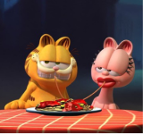

Arlene
Uma gata rosa e a namorada de Garfield. Aparece esporadicamente, já que GARFIELD é visto muito paquerando outras gatas
Garfield tem um reencontro inesperado com seu pai, que estava há muito tempo desaparecido - um gato de rua todo desengonçado que atrai o filho para um assalto de alto risco.
Uma gata rosa e a namorada de Garfield. Aparece esporadicamente, já que GARFIELD é visto muito paquerando outras gatas